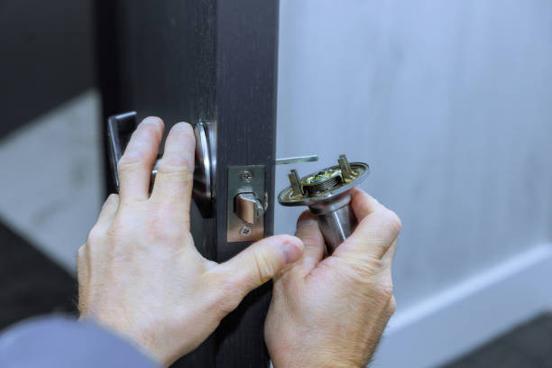
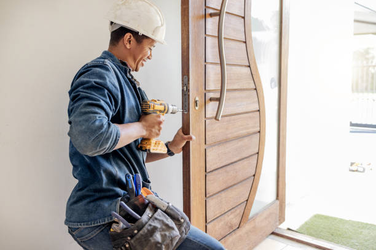

Mead Colorado
info@lomolocksmith.xyz
Mead Colorado
info@lomolocksmith.xyz

Need a locksmith in Mead Colorado ? We offer expert lock repair, key replacement, and security upgrades. Available around the clock to ensure your safety and peace of mind.
Click Here To Call Us (877) 796 9523When you’re locked out or need to upgrade your home or business security, our expert locksmith services in Mead Colorado are here to help. With years of experience, we are your go-to solution for all lock and key issues, ensuring you receive fast, reliable, and professional service every time.
We offer a comprehensive range of locksmith services in Mead Colorado including emergency lockout assistance, lock repairs, key duplication, rekeying, and installation of high-security locks. Whether you’re locked out of your home, car, or office, our skilled technicians arrive promptly, equipped with the latest tools to resolve your issue efficiently. Our locksmiths are trained to handle all types of locks, from traditional key-and-tumbler systems to modern electronic locks, ensuring that we can meet all your security needs.
In Mead Colorado we understand the importance of security for both residential and commercial properties. That’s why we also offer security consultations, helping you choose the best security solutions for your specific needs. Whether you need to upgrade your locks, install new deadbolts, or enhance your overall security system, we’re here to provide expert advice and top-notch service.
Available 24/7, our locksmith services in Mead Colorado are designed to give you peace of mind. Trust us to keep your property secure, no matter the time of day or night. Contact us today for quick, dependable locksmith services tailored to your needs.
Residential & commercial Lomo Locksmith
Quality services at affordable prices
Immediate 24/ 7 emergency services


Choosing the right locks for your home is crucial to ensuring the safety and security of your property and loved ones. At Lomo Locksmith, we specialize in providing expert locksmith services across all cities in Mead Colorado offering a wide range of home locks tailored to meet your needs.
Deadbolt Locks
Deadbolt locks are one of the most popular choices for exterior doors, known for their exceptional strength and resistance to forced entry. They come in single and double-cylinder options, offering enhanced protection by making it harder for intruders to gain access.
Smart Locks
Smart locks are revolutionizing home security by integrating advanced technology with convenience. These locks offer keyless entry and can be controlled remotely via smartphone apps, making them ideal for tech-savvy homeowners who value control and flexibility.
Knob Locks
Knob locks are commonly found on interior doors, providing basic security for rooms like bedrooms and bathrooms. While not recommended as the primary security measure for exterior doors, they add an extra layer of privacy inside your home.
Lever Handle Locks
Perfect for interior doors, lever handle locks are easy to operate and are an excellent choice for homes with elderly individuals or those with disabilities. They offer a blend of functionality and style without compromising on security.
Mortise Locks
Mortise locks are known for their durability and heavy-duty security features, making them a great option for both residential and commercial properties. With a complex locking mechanism, they provide a high level of security against unauthorized access.
For expert advice and professional installation, trust Lomo Locksmith to secure your home with the best locks in Mead Colorado .
Residential & commercial Lomo Locksmith
Quality services at affordable prices
Immediate 24/ 7 emergency services
With the rise of smart technology, securing your home or business has never been more efficient. At Lomo Locksmith, we offer professional smart lock installation services . Our experts can help you choose the right smart lock that integrates seamlessly with your lifestyle while enhancing security. Whether it’s keyless entry, remote access, or monitoring features, we will install smart locks that improve your safety and convenience.

If your locks are showing signs of wear and tear, our expert lock repair services can restore their functionality. Whether you've experienced a break-in or simply need to fix outdated locks, our professional technicians are skilled in diagnosing and repairing various lock types. We understand the importance of security in your home or business, and we are here to help you maintain your locking systems with our reliable, efficient repair services.

Automotive locksmith services require specific skills and tools, and at Lomo Locksmith, we excel in providing comprehensive solutions for your vehicle. Whether you're locked out of your car, need a key replacement, or require ignition repair in Mead Colorado our locksmiths have the expertise to get you back on the road quickly.
Our automotive locksmith services cover all make and model vehicles. We use state-of-the-art equipment to create new keys, reprogram fobs, and unlock vehicles without causing any damage. Customer satisfaction is our priority, and we ensure that our services are reliable and affordable. For all your automotive locksmith needs, trust Lomo Locksmith to deliver fast and efficient solutions.

Convenience and security are at the forefront of today's technology, and keyless entry systems are an excellent example of this evolution. At Lomo Locksmith, we specialize in the installation and maintenance of keyless entry systems providing our clients with a secure and easy way to access their properties.
These systems allow you to unlock your doors without traditional keys, using PIN codes, fingerprint recognition, or smartphone apps instead. Our expert locksmiths can help assess your property's needs, recommend the best solutions, and ensure a quick and professional installation. Embrace the future of security with keyless entry systems from Lomo Locksmith, where convenience meets cutting-edge technology.

Proper key programming is essential for the optimal performance of your vehicle's electronic systems. At Lomo Locksmith, we offer expert key programming services that ensure your keys work seamlessly with your car's ignition system. Whether you need programming for a transponder key, remote key fob, or another specialized key type, our technicians have the necessary tools and expertise to do it right.
We stand out for our attention to detail, ensuring that each key is programmed accurately to avoid potential issues later on. Our goal is to provide you with hassle-free automotive access. When it comes to key programming, you can rely on Lomo Locksmith for expert service and comprehensive solutions.
When it comes to protecting your home or business, standard locks may not be enough. At Lomo Locksmith, we offer comprehensive security lock services aimed at fortifying your property . Our experienced locksmiths provide expert installation and maintenance of high-security locks, ensuring that your access points are safeguarded against intruders.
We work closely with our clients to recommend the most effective security systems, which may include smart locks, reinforced deadbolts, and comprehensive lock replacement services. With an understanding of the latest trends in security technology, we aim to provide solutions that meet the evolving needs of our customers. Choose Lomo Locksmith for expert security lock services designed to keep you safe.

A broken key can disrupt your day significantly and compromise your security. Our broken key extraction service specializes in safely removing broken keys from locks without causing damage. Our experienced locksmiths use specialized tools to extract broken pieces and can often make replacements on the spot, ensuring you regain access quickly. Don’t let a broken key ruin your plans; rely on our skilled team to provide swift and professional service, restoring your access and security in no time.

When you search for a locksmith near you you want someone who is fast, reliable, and trustworthy. At Lomo Locksmith, we pride ourselves on being the local locksmith that you can depend on in times of need. With a focus on customer satisfaction, we offer a full spectrum of locksmith services for residential, commercial, and automotive needs. Our prompt and professional service, alongside our commitment to quality, make us the go-to choice for security solutions . Trust in our expertise and let us help you with all your locksmith needs!
Years Experience
Expert Technicians
Satisfied Clients
Compleate Projects
When it comes to securing your home or business in Mead Colorado Lomo Locksmith is the name you can trust. Our team of certified and highly skilled locksmiths is dedicated to providing top-notch security solutions tailored to your needs. Whether you're locked out of your home, need a new set of keys, or require advanced security upgrades, we have you covered.
At Lomo Locksmith, we pride ourselves on our fast, reliable, and efficient services. We understand that lock and key emergencies can happen at any time, which is why we offer 24/7 emergency assistance to ensure you’re never left stranded. Our professionals arrive promptly at your location, equipped with state-of-the-art tools and technology to handle any locksmith challenge swiftly and effectively.
Our commitment to customer satisfaction sets us apart. We don’t just fix locks; we provide peace of mind. From rekeying and lock repairs to installing high-security systems, our team is trained to handle a wide range of services with precision and care. We use high-quality products and the latest techniques to ensure your property remains secure and protected.
Choosing Lomo Locksmith means choosing a company that values your security and convenience. We offer transparent pricing, exceptional service, and a dedication to exceeding your expectations. Contact us today to experience why Lomo Locksmith is the preferred choice for locksmith services in Mead Colorado . Your safety is our priority.
When the unexpected happens, you need a reliable partner who can help you regain access to your property quickly and safely. At Lomo Locksmith, we specialize in emergency locksmith services that are designed to address your urgent needs any time of the day or night. Our team of skilled and certified locksmiths in Mead Colorado is available 24/7, ready to respond to your calls in no time. Whether you are locked out of your home, car, or office, we guarantee prompt and efficient service that prioritizes your safety and satisfaction.
We utilize the latest equipment and techniques to ensure that we can handle any emergency situation. Our emergency locksmith services encompass lockouts, broken key extractions, and rekeying services. Choosing us means choosing peace of mind; our team is committed to getting you back on track with minimal disruption to your day. The next time you find yourself in a sticky situation, remember that Lomo Locksmith is just a call away!
Are you searching for a reliable 24-hour locksmith near you? Look no further! At Lomo Locksmith, we pride ourselves on offering round-the-clock locksmith services in Mead Colorado . Regardless of the time or day, our team is just a phone call away. We provide a wide range of services, from emergency lockouts to lock repairs, all tailored to meet your specific needs. Our local expertise means we can get to you faster, ensuring that you’re never left waiting for help when you need it the most.
Choosing a local locksmith brings unique benefits that often outweigh those offered by larger chains. At Lomo Locksmith, we pride ourselves on being your local locksmith service provider in Mead Colorado . Our deep knowledge of the community and its specific security needs means we can tailor our services to effectively meet your requirements.
We offer a full suite of local locksmith services, including residential, commercial, and automotive solutions. Our team is familiar with the latest trends and products in the security industry, ensuring you receive the most effective and affordable options. Plus, as part of the Mead Colorado community, we value our customers and strive to build lasting relationships based on trust and transparency. When you need a local locksmith who knows the area inside and out, turn to Lomo Locksmith.
Nobody wants to overpay for locksmith services, especially during stressful situations like lockouts. At Lomo Locksmith, we understand that affordability is key, which is why we are proud to offer competitive, transparent pricing for all of our locksmith services in Mead Colorado .
We believe that everyone deserves access to quality locksmith solutions without breaking the bank. Whether you need a simple lock replacement or complex security system installation, our licensed locksmiths will provide you with a thorough assessment and a no-obligation quote. With our commitment to affordability, you can rest assured that you won’t encounter any hidden fees or unexpected charges. Choose Lomo Locksmith for cost-effective locksmith services that don’t compromise on quality.
Your home is your sanctuary, and securing it is paramount. At Lomo Locksmith, we offer dedicated locksmith services for homeowners in Mead Colorado . Whether you need new lock installations, lock repairs, or security system upgrades, our expert team is ready to assist. We understand that every home has unique security needs, which is why we provide personalized recommendations to protect your loved ones effectively. Trust us to give you peace of mind knowing your home is safe and secure.
Finding yourself locked out of your car can be a frustrating experience, especially when you're in a hurry. Our car locksmith services in Mead Colorado are designed to get you back on the road quickly and efficiently. Whether you've lost your keys, need a key duplication, or require an ignition repair, our highly trained automotive locksmiths are here to help. We utilize advanced technology to provide key programming and keyless entry solutions that accommodate a wide range of vehicle makes and models. Trust our team to deliver fast, friendly, and reliable services whenever you're in a pinch.
Protecting your home should never be taken lightly. Our comprehensive residential locksmith services offer a range of solutions tailored to your specific needs, including lock installations, repairs, rekeying, and emergency lockout assistance. We prioritize your security and peace of mind by utilizing the latest technology and practices in the locksmith industry. With a team of certified professionals, we ensure that your home remains safe and secure at all times.
For business owners securing your assets and employees is paramount. Lomo Locksmith provides comprehensive commercial locksmith services tailored to protect your business effectively. Our offerings range from simple lock installations to sophisticated master key systems that provide controlled access to various areas within your facility.
We understand the unique challenges that businesses face regarding security. Our locksmiths are equipped to work on high-security locks, electronic access systems, and more to provide the best security solutions. We also offer ongoing maintenance and lock repair services to ensure your business remains secure over time. Trust Lomo Locksmith to safeguard your business with reliable and professional locksmith services that pave the way for your success.
In an office environment, security is not just a luxury; it is a necessity. At Lomo Locksmith, we specialize in offering office locksmith solutions that enhance safety and accessibility in your workplace. Our team of experts is trained to handle everything from simple lock replacements to implementing advanced security systems such as electronic locks and keyless entry systems.
We take the time to understand the specific needs of your business to provide custom solutions that suit your office layout and employee count. In addition to installation services, we also offer rekeying and lock repair services to ensure that your office security system remains effective and up to date. When searching for a locksmith for your office in Mead Colorado turn to Lomo Locksmith for reliable service you can trust.
Convenience is key when you find yourself in need of locksmith services, and that's where our mobile locksmith service in Mead Colorado comes into play. Our fully equipped mobile units are designed to come to you, whether you're stranded in a parking lot or need assistance at your home or business. We provide rapid, on-site solutions, from emergency lockouts to lock repairs and installations. Our commitment to mobility and prompt service ensures that you won't be left waiting when you need help the most.
If you’ve recently moved into a new property or lost a key, rekeying your locks is a smart and cost-effective way to enhance security. Our rekey locks services are designed to provide you with peace of mind without the expense of completely changing your locks. Our skilled locksmiths will adjust the pins of your existing locks to work with new keys, making any old keys obsolete. This service is particularly important after moving, as it prevents unauthorized access to your new home. Opt for our rekeying services to increase your security efficiently and affordably.
Proper lock installation is vital for safeguarding your property. At Lomo Locksmith, we specialize in professional lock installation services in Mead Colorado . Whether you’re upgrading your existing locks or outfitting a new home or office, our team of experienced locksmiths will ensure that each lock is installed correctly and made to last.
Our professionals are familiar with a wide variety of locking systems, including traditional locks, deadbolts, and high-security locks. We understand that security needs vary from one property to another; therefore, we assess your specific requirements and recommend the most suitable options. With Lomo Locksmith, your trust and satisfaction are our top priorities, which is why we guarantee precision in every lock installation service we provide.
Key duplication is a necessary service for ensuring that you always have a spare key on hand. Our key duplication service in Mead Colorado uses high-quality materials and state-of-the-art technology to create flawless replicas of your keys. From house keys to high-security keys, we handle them all with precision and care. Don’t wait until you’re locked out—plan ahead with our reliable key duplication services.
Lockouts can be incredibly stressful, especially when you’re in a hurry. That’s why Lomo Locksmith offers speedy lockout services in Mead Colorado . No matter where you are—home, office, or your vehicle—our professional locksmiths are available 24/7 to help you regain access swiftly and safely.
We understand the urgency of lockout situations and promise to arrive on-location promptly. Our experienced technicians use the latest tools and techniques to handle your locks carefully, ensuring no damage occurs during the unlocking process. When searching for a lockout service near me, Lomo Locksmith is the answer. We provide reliable, efficient, and affordable solutions to get you back on schedule.
Protecting your property with high-security locks is essential in today’s world. At Lomo Locksmith, we offer a range of high-security lock options that resist picking, drilling, and unauthorized key duplication. Our expert technicians will evaluate your premises and recommend the best high-security solutions tailored to your needs. Invest in your safety with our top-of-the-line lock systems that provide peace of mind.
Your safe holds some of your most valuable possessions, so it’s crucial to ensure that it is securely locked and accessible only to you. Our locksmith for safe services specialize in sales, installations, and repairs of safes. Whether you need assistance accessing a locked safe or want to upgrade to a more secure model, our experienced technicians are equipped to handle your needs with care and expertise. Protect your valuables with our trustworthy safe locksmith services.
Managing multiple access points can be a challenge for any business or property owner. Our master key systems service provides an efficient solution to control access while maintaining security. With a master key system, you have one key that opens multiple locks, streamlining access for authorized personnel while restricting entry to others. Our expert locksmiths will work with you to design a custom master key system that meets your specifications, ensuring that your property's security dynamics work for you. Trust us to simplify and enhance your access control.
Deciding whether to rekey or replace your locks is an important consideration for homeowners in Mead Colorado . At Lomo Locksmith, we understand the need for optimal home security and are here to help you make the best choice for your situation.
Rekeying Your Locks
Rekeying is a cost-effective solution that involves altering the internal pins of your existing locks so old keys no longer work. This is ideal when you’ve recently moved into a new home, lost your keys, or need to restrict access after someone moves out. Rekeying provides a fresh start without the expense of new locks, maintaining the existing hardware while enhancing security.
Replacing Your Locks
Replacing locks is recommended when your locks are damaged, outdated, or no longer meet your security needs. Opting for new locks allows you to upgrade to more secure options, such as high-security deadbolts or smart locks. This is also a great choice if you’re looking to improve the aesthetic of your doors or add advanced features like keyless entry.
Which Option is Right for You?
The decision to rekey or replace depends on your specific security needs, budget, and the condition of your existing locks. Rekeying is perfect for quick, affordable changes, while replacing offers the benefits of modern technology and enhanced protection.
For professional advice and quality locksmith services in Mead Colorado trust Lomo Locksmith. Whether you need rekeying or lock replacement, our experts ensure your home is safe and secure. Contact us today to discuss your options!
The Town of Mead is a Statutory Town in Weld County, Colorado, United States. The town population was 4,781 at the 2020 United States Census.
Yes, we provide a wide range of commercial locksmith services, including master key systems and high-security locks in Mead Colorado .
Absolutely. Lomo Locksmith uses advanced, non-destructive techniques to unlock cars safely in Mead Colorado .
Lomo Locksmith works with all major lock brands, including Schlage, Kwikset, Yale, and more, to meet your needs in Mead Colorado .
Yes, we provide 24/7 emergency lockout services for homes, businesses, and vehicles throughout Mead Colorado .
Contact Lomo Locksmith for car key replacement and programming services. We can handle most makes and models .
Yes, Lomo Locksmith has the expertise and equipment to make duplicate keys for high-security locks .
Yes, we can install advanced security systems, including surveillance cameras and access control, for homes and businesses .
Yes, Lomo Locksmith offers professional key cutting services for homes, businesses, and vehicles in Mead Colorado .
Lomo Locksmith serves all neighborhoods and surrounding areas providing fast and reliable service.
Yes, Lomo Locksmith can program transponder keys for most vehicle models in Mead Colorado .
Yes, we offer special discounts for senior citizens and veterans . Contact us for more information.
Yes, Lomo Locksmith offers 24/7 emergency locksmith services across Mead Colorado including weekends and holidays.
Yes, Lomo Locksmith is experienced in diagnosing and repairing keyless entry systems for homes, businesses, and vehicles .
Yes, we provide security assessments to identify potential vulnerabilities and recommend the best solutions for homes and businesses in Mead Colorado .
Yes, we offer a full range of automotive locksmith services, including car lockouts, key replacements, and ignition repair in Mead Colorado .
Lomo Locksmith can assess your lock and recommend whether repair or replacement is the best option to ensure security in Mead Colorado .
Rekeying is a cost-effective option. Lomo Locksmith can help you decide the best approach based on your security needs .
Lomo Locksmith aims to reach you within 30 minutes or less for emergency services anywhere in Mead Colorado .
The cost depends on the type of lock and labor. Lomo Locksmith offers competitive pricing for lock changes .
Typically, lock changes take about 20-30 minutes per lock. Lomo Locksmith provides efficient service throughout Mead Colorado .
Yes, Lomo Locksmith provides free, no-obligation estimates for all services .
Yes, Lomo Locksmith specializes in fast and safe house lockout services .
Yes, Lomo Locksmith provides mailbox lock replacement services to ensure your mail stays secure in Mead Colorado .
Yes, if a key breaks off in a lock, Lomo Locksmith can safely extract the broken piece and make a new key for you in Mead Colorado .
Yes, Lomo Locksmith offers high-security lock installations to provide maximum protection for your property in Mead Colorado .
Yes, Lomo Locksmith installs the latest smart lock systems to enhance security for homes and businesses in Mead Colorado .
Lomo Locksmith can repair all types of locks, including deadbolts, smart locks, and high-security locks in Mead Colorado .
Lomo Locksmith can open, repair, and install a wide variety of safes, including combination and digital safes, .
Yes, we design and install master key systems to give business owners convenient and controlled access to their premises .
Yes, we offer rekeying services to change the internal components of your existing locks saving you money.
Lomo Locksmith is my go-to locksmith in Mead Colorado . They recently installed new locks at my office, and the service was impeccable. The technician was professional, and the job was completed promptly. Excellent work!
Profession
I had a fantastic experience with Lomo Locksmith in Mead Colorado . They handled my lock repair with skill and precision. The technician was friendly and knowledgeable. I’m very pleased with their service!
Profession
Lomo Locksmith did a superb job rekeying the locks in my Mead Colorado home. Their technician was prompt, professional, and the job was done perfectly. I’m very satisfied with their service!
Profession
Mead CO Lomo Locksmith Pros
(877) 796 9523
info@lomolocksmith.xyz
09.00 AM - 09.00 PM
09.00 AM - 12.00 PM